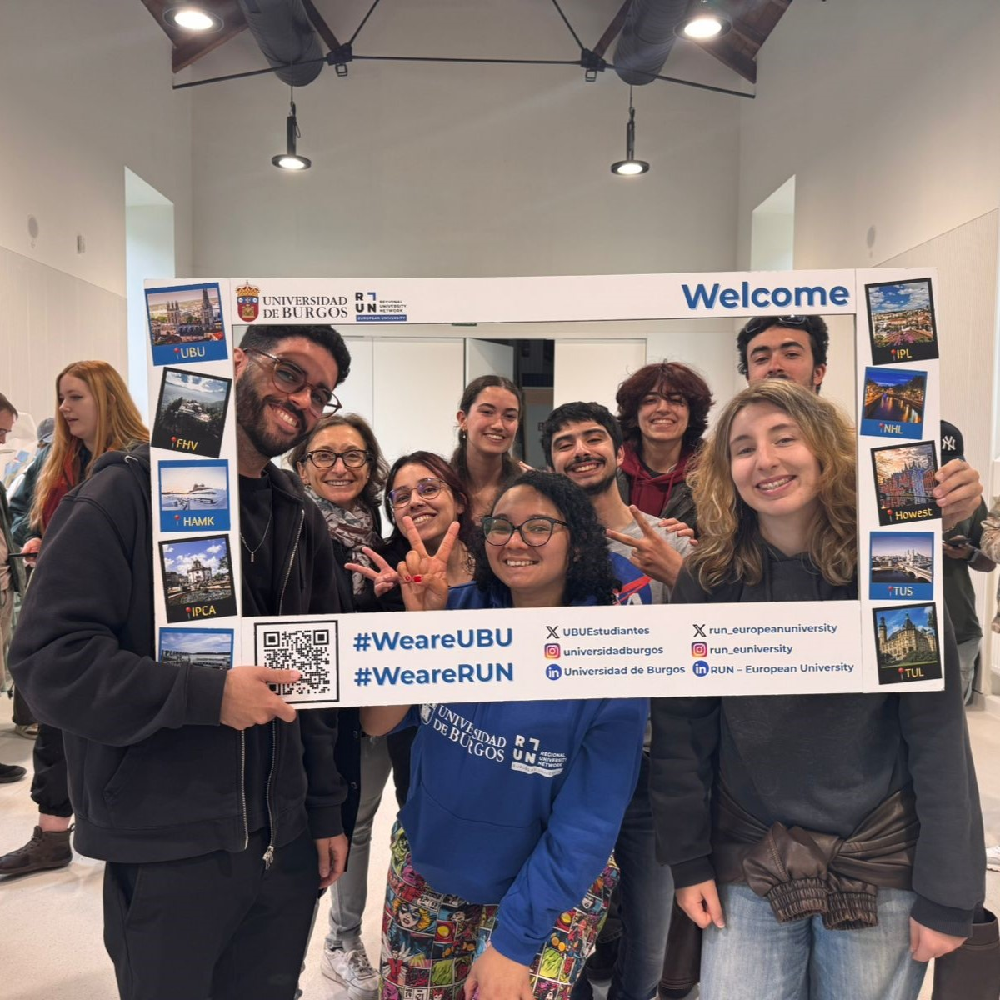
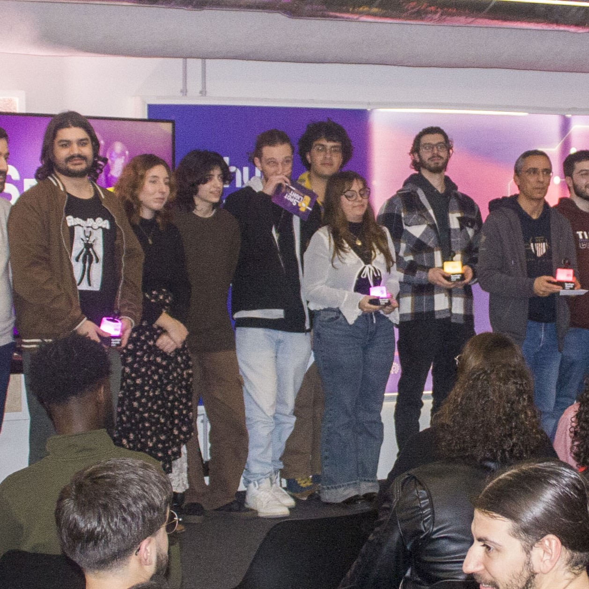
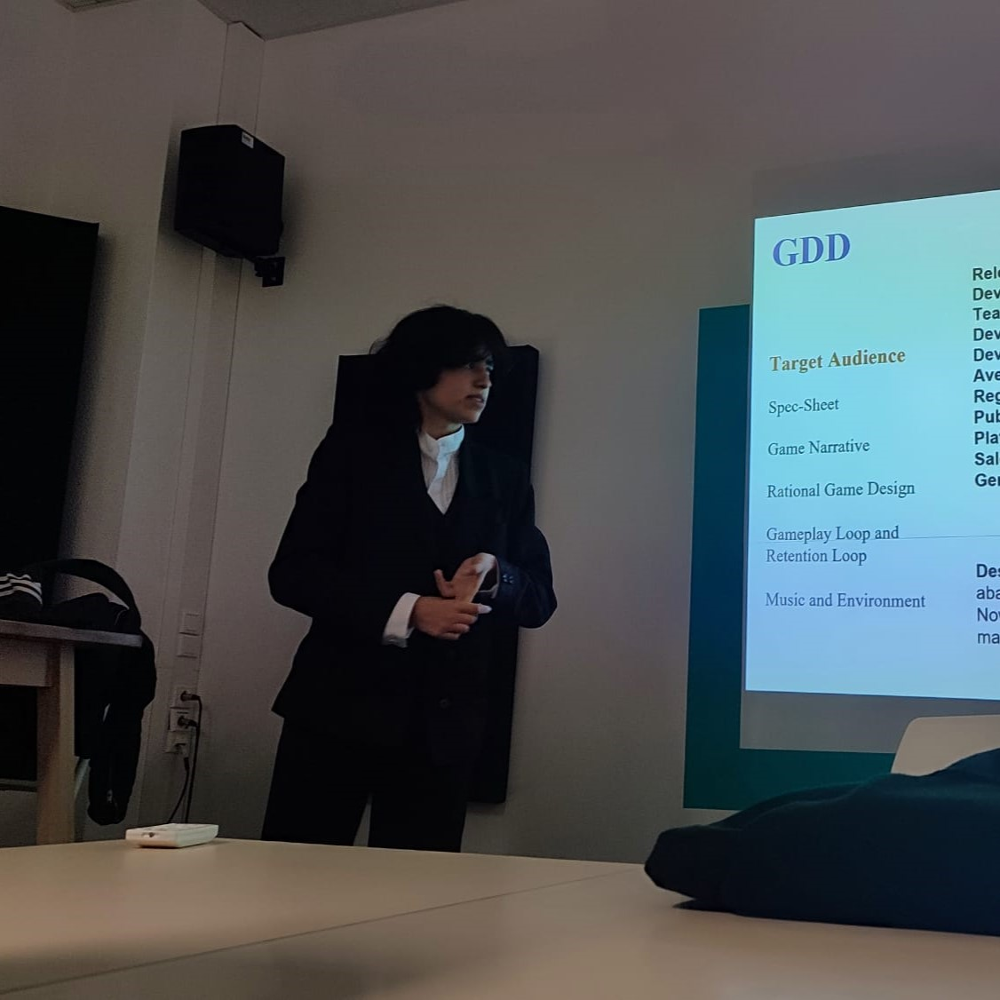

Game Design
I've always wanted to make games, and for a long time I though programming was the only way to go. But then I found Game Design, and it's what I've always wanted to do; to create inovating and creative stories with immersive and captivating gameplay, to create a true memorable experience.
Narrative Design / Writting
I've always loved to come up with complex narratives and meaninful stories. A big part of me still wishes to write books some day. But in the meantime I'd love to write beautiful and magical narratives for games. To craft a narrative so bewildering that after you play the game you will be left flabbergasted staring at the screen.
Game UX
It was only while in university that I discovered the world of user experience and player experience. I found it very fascinating from the first moment I started learning about it. I specifically enjoyed finding usability problems and being able to present them in a structured way.
Accessible Game Design
Like game UX, I only really understood accessible game design throught my university. I first started learning about it in my second year, as was immediately so interested in it; interested in the multiple ways accessibility can be used and how much of a difference it makes for everyone!